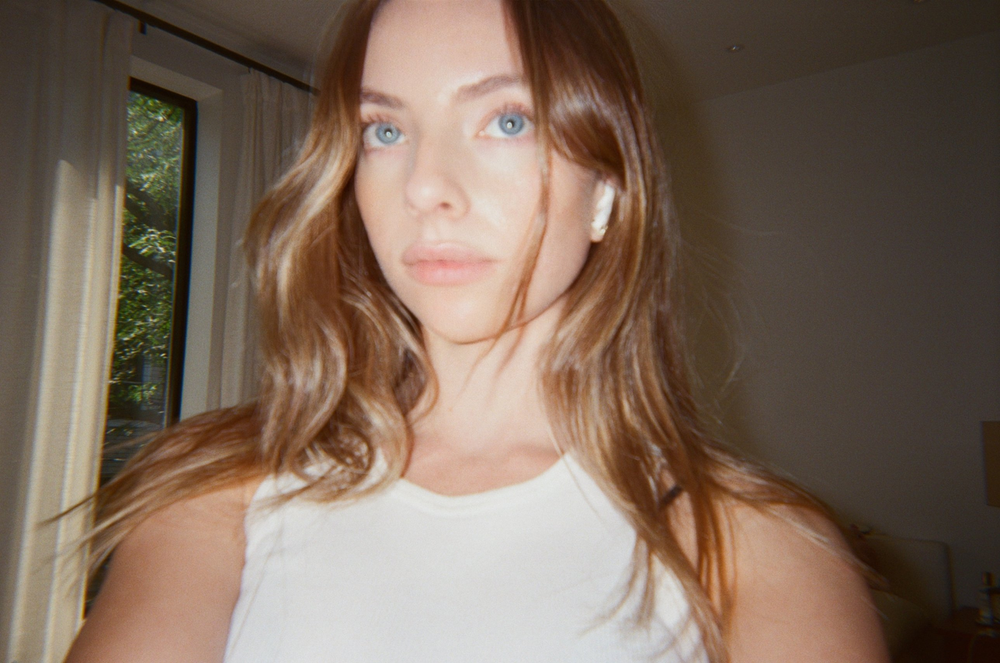

orli rein is an imovie kid turned creative producer based in new york city.
she brings campaigns to life across formats and experiences, blending thoughtful production with a sharp eye for storytelling and culture.
naturally curious and chronically online, she spends an unreasonable amount of time looking for inspiration — and occasionally calls it work.